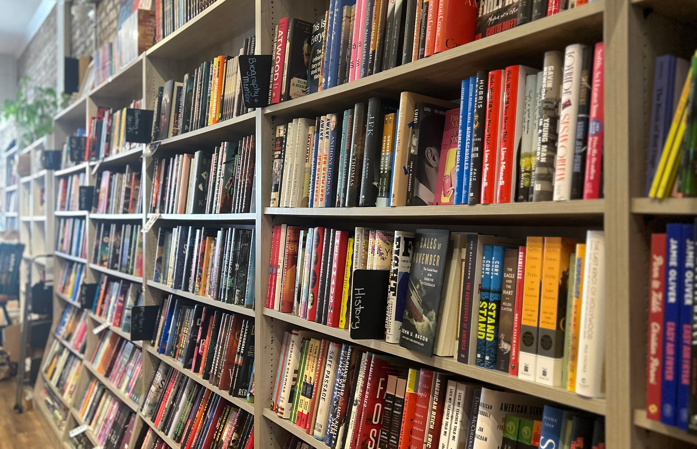

Why Third Places

Third Places can vary in what role they serve, and what they are- from coffeehouses, to local bookstores, churches to local libraries, from that diversity though allows a place with one or several individuals to gather and spend time outside of a workplace or community. It’s precisely for that reason why third places are so essential to community connections and care.
Despite this though, more and more third places have continued to become increasingly more commercialized and focused on profit- thus barring attention and devotion towards supporting individuals and instead more focus on profit (E.G. Starbucks, Barnes & Noble). In comparison to libraries and most churches, community centers, and even independent businesses (e.g. local coffee shops and bookstores), primary focus is on supporting their communities. Often their primary goal is on providing resources for leisure, companionship, faith, or education (among various other roles), although financial incentives might present for them the latter factors are the main incentive for these third places. Alongside additional doctors of less people pursuing communities outside of digital spheres, or interaction with diverse communities outside of their local sphere, a silent but still noticeable threat to third places has arisen.
Still more and more individuals have started to notice this rise, and are advocating for the education, and promotion of third places within communities. As of 2026 with the rise of AI, international conflicts, and a Post-COVID society, connection and community serves an important role, in maintaining relationship, growth, and humanity, and as this website shall show, reasons why it should be preserved.